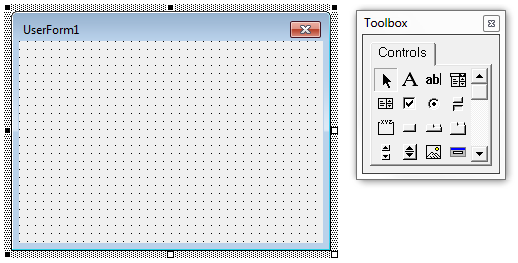

Forms are the basic building blocks through which you create your own custom dialog boxes for your application.
Through custom forms you can provide information to users, get information from users, or have your users control activity in the application.
Forms are like an artist's canvas—they start out blank. To fill your canvas, you need a palette. In this case, your palette is the control toolbox. You, as the artist, place selected controls from the toolbox onto the form. You can add as many controls as you like. At any time you can adjust size and properties of the controls and even the form itself. Finally, you add the functionality (code) to the controls that brings your form to life.

Although VB.NET supports different types of forms, VBA supports only the UserForm. This means some forms have been created and exported in VB.NET that cannot be imported into VBA.
UserForms—or forms, as they are called in this guide—can be modal or modeless. The ShowModal property of a form determines whether it is modal or modeless. Modal forms displayed in your running application must be closed before users can perform any other action in the application.
Design mode allows you to define a form directly in the UserForm window of the VBA IDE, while Run mode allows you to make changes to a form dynamically using the code of a program.
Controls placed on a form allow a program to request input from the user.
A VBA project must display a user form before it can be used and then hidden after you no longer need it.
There may be times when you want to load a form into memory during runtime, but not show the form. You may choose to do this to better control when the load time occurs in your application, or when you need programmatic access to the form but do not want to display the form to the user.
When you define a dialog box as modal in AutoCAD VBA, the user must respond to the dialog box before any other part of the application is allowed to continue.
Forms allow for input from the user.
Modeless dialog boxes allow a form to remain displayed while the user interfaces with the drawing area, similar to a floating palette.